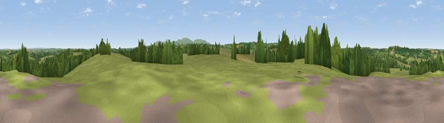

Rutleigh Ball Hill
#27314 in England · top 50% of its area beats it · near NorthlewThe view, rendered

A 360° render of this exact spot computed from the terrain model, tree cover and land cover — summer colours, afternoon light, calibrated against photographs of famous viewpoints. Real trees, hedges and buildings will differ in detail.
The panorama
Grey silhouette: terrain skyline in each direction (720 bearings, Earth curvature and refraction included). Dashed green: skyline with trees (+15 m) and buildings (+8 m) as obstacles. Blue strip: how far the ground is visible on each bearing.
Where the view opens
Wedge length = distance to the farthest visible ground on that bearing (vegetation-aware). Rings at 10, 25 and 50 km.
What fills the view
75% grassland · 21% woodland · 3% cropland ·
Angular shares of the visible panorama (visual magnitude), not map area. Landscape diversity 0.29 (0–1 Shannon).
Key numbers
More beautiful places nearby
The staircase of upgrades: each row has a higher view potential than everything closer. Driving times are estimates from straight-line distance, calibrated against real road routing — check an actual route before setting out.
| Place | Direction | Drive | Score |
|---|---|---|---|
| Viewpoint near Northlew | SSE · 3 km | ~8 min | 52.8 |
| Viewpoint near Highampton | NW · 4 km | ~9 min | 59.5 |
| Viewpoint near Bratton Clovelly | SSW · 7 km | ~14 min | 60.9 |
| Viewpoint near Petrockstowe | NNW · 7 km | ~15 min | 65.5 |
| Viewpoint near Sourton | SSE · 12 km | ~22 min | 72.2 |
| Sourton Tors | SSE · 12 km | ~23 min | 74.8 |
| Viewpoint near Sourton | SSE · 13 km | ~24 min | 75.7 |
| Yes Tor | SSE · 13 km | ~25 min | 78.5 |
50.79615, -4.11327 · source: dobih hill · position refined by local search. Computed location — check access rights before visiting.